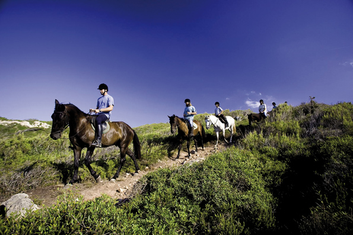

Camí de Cavalls, le meilleur observatoire
Minorque mérite d’être contemplée petit à petit : cela est possible avec le Camí de Cavalls. Un chemin dont certains situent l’origine au XIVe siècle et qui, au XVIIIe siècle, avait une utilité militaire réunissant les tours de défense réparties sur toute la côte. De nos jours, au XXI e siècle, le chemin nous permet de découvrir l’Île comme il se doit, sans se presser et avec pour seul but de se laisser séduire par la nature.
 Le Camí de Cavalls compte 185 kilomètres et fait le tour du périmètre de Minorque. Après des années laissé à l’abandon, les minorquins ont réussi à rétablir le sentier et il est désormais possible de le parcourir entièrement. Il se parcourt à pied, à vélo ou à cheval. Nous insistons…sans se presser.
Le Camí de Cavalls compte 185 kilomètres et fait le tour du périmètre de Minorque. Après des années laissé à l’abandon, les minorquins ont réussi à rétablir le sentier et il est désormais possible de le parcourir entièrement. Il se parcourt à pied, à vélo ou à cheval. Nous insistons…sans se presser.
Le chemin autant que l’Île en elle-même, proposent plusieurs aspects, c’est pour cette raison qu’il est divisé en 20 tronçons. Certains sont adaptés pour toute sorte de public avec des itinéraires simples et accessibles. D’autres requièrent une plus grande aptitude et une connaissance du terrain. C’est pour cela que nous vous conseillons de bien vous informer avant d’entamer un itinéraire afin de choisir celui qui vous conviendra le mieux. L’offre est variée : il existe des tronçons d’un peu moins de 5 kilomètres et d’autres de plus de 13 kilomètres. Des chemins pratiquement plats et d’autres avec des montées et des descentes plus prononcées. Vous avez l’embarras du choix.
 El Camí de Cavalls, connu techniquement comme GR233 (désignation qui l’inclut parmi les plus grandes randonnées d’Europe), est signalé tout le long par des poteaux en bois couronnés du symbole du fer à cheval. Le chemin constitue sans aucun doute un des meilleurs observatoires de l’île.
El Camí de Cavalls, connu techniquement comme GR233 (désignation qui l’inclut parmi les plus grandes randonnées d’Europe), est signalé tout le long par des poteaux en bois couronnés du symbole du fer à cheval. Le chemin constitue sans aucun doute un des meilleurs observatoires de l’île.